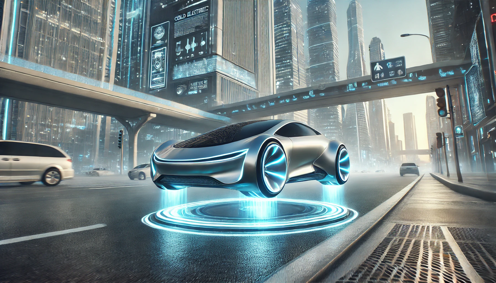

Home
Welcome to the Cold Electricity Open Project, an open project dedicated to promoting cold electricity technology and its applications.
About Cold Electricity
中文：点击查看
English: Click to view
Project Overview
The goal of the Cold Electricity Open Project is to bring together all
ordinary people and experts who understand cold electricity and its
characteristics, find ways to utilize cold electricity, create
self-powered cold electricity devices, popularize cold electricity
technology and use it to penetrate into production and life. and many
other fields. It allows everyone to use cold electricity anywhere as a
endless source of clean energy and replace existing traditional energy
sources and existing electricity, including traditional renewable
energy sources such as solar power and wind power, to improve living
standards. The project also has a goal to use cold electricity
energy storage devices, cold electricity/radiant energy/scalar wave
transmitters and receivers to establish a global wireless cold
electricity transmission network and enable all electrical
appliances to work with cold electricity.
Cold Electricity Device Guide
To be completed. If you know the exact method of making some simple
self-powered cold electricity generator that can output DC12V and
AC220V cold electricity and the exact method of making cold electricity
transmitters and portable cold electricity receivers, you
can contact us and send us your method. Thank
you very much for your support of this project.
Cold Electricity Open Subprojects
#
|
Subprojects
|
Progress
|
Details
|
1
|
Self-powered Cold
Electricity Generators |
Not Started
|
Unassisted
|
2
|
8Hz Global
Wireless Cold Electricity Transmission and Resonance Network
|
Not Started |
Unassisted |
3
|
Cold Electrostatic
Levitation Car
|
Not Started |
Unassisted |
4
|
Adaptation of Cold
Electricity and Traditional Electrical Appliances
|
Not Started |
Unassisted |
|
|
|
|
The red words in the "Progress" column in the table indicate that the
corresponding subproject has not started due to some reasons or
encountered problems in progress, the blue words indicate that the
corresponding subproject is in progress, and the green words indicate
that the corresponding subproject has been completed.
Join, Support &
Investment
The creator of the project believed that cold electricity would change
the world if it were widely used, and wanted to make some self-powered
cold electricity generators, transmitters, and receivers and distribute
them for free as part of the project, but had no idea how to make them,
so the the project needs support and help from more people. If
you wish to join, support or invest in the Cold Electricity Open
Project, please contact us. We welcome all forms of collaboration.
Contact Us
X account: @OpenCold2818
https://x.com/OpenCold2818
Email: coldelecopenproj@gmail.com
Cold Electricity Open Project